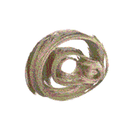
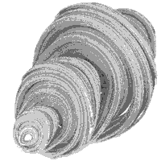
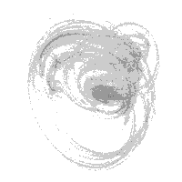

Quaternion Julia Fractals
Written by Paul Bourke
July 2001
Googleblatted and slashdotted
What happened on the 3rd February 2004, the birthday of Gaston Julia?
Introduction
Quaternion Julia fractals are created by the same principle as the
more traditional Julia set except that it uses 4 dimensional complex
numbers instead of 2 dimensional complex numbers. A 2D complex number
is written as z = r + a i where i2 = -1. A quaternion has
two more complex components and might be written as
q = r + a i + b j + c k where r, a, b, and c are real numbers. There
are slightly more complicated relationships between i, j, and k
|
i2 = j2 = k2 = -1
|
| i j = k |
j k = i |
k i = j |
| j i = -k |
k j = -i |
i k = -j |
For more details on quaternion maths (how to add and multiple)
see the reference given in the header above.
To generate a quaternion fractal a function
is iterated zn+1 = f(zn) and if it tends to
infinity then it is outside the Julia set, if it is bounded then it
is inside the set. Non linear functions are by far the more interesting,
in what follows we use the simplest non linear function
zn+1 = zn2 + c where c and z are
both quaternions. z0 is the point in quaternion space
being considered and c is a constant that identifies the particular
quaternion. Another function that is often used is a cubic, namely
zn+1 = zn3 + c.
Just as with 2D traditional Julia fractals which are either connected
or not depending on the constant c, the same applies to quaternion
Julia sets. Some examples of the range of Julia set shapes is given
in the column on the right. The disconnected sets aren't represented
because they are hard to visualise in 2D, they really require a stereoscopic
3D display and/or projection system. The images created here were rendered
using custom software distributed on N separate machines. The goal was
to create interactive quaternion sets, at the time of writing 16 machines
could render a typical set at about 1 frame every 2 seconds.
Practical matters
The fundamental issue is whether the series "escapes" or not. This cannot
always be determined without generating the series to an infinite length,
something undesirable in practice. There are two criteria that if they
are met allow one to make a decision in a finite time. The first is to
assume that if the modulus (length) of a term in the series is larger than
some value then the series will escape. This is typically taken to be 4.
Another criteria is to limit the number of iterations and if the series
hasn't escaped by then, then the point is considered to be inside the
set. This maximum number of iterations is often as low as 50, the higher
it is the longer the fractal takes to create but the more accurate it is.
Another approximation is the precision at which the 4D quaternion space
is sampled. One approach is to relate the pixel resolution of the image
to quaternion space
and sample one or two times per pixel. Too coarse a sampling
risks missing parts of the fractal, a very fine sampling results in a
very long compute time. Since these are fractal objects there are good
reasons to sample them very finely, this raises interesting questions
when one tries to antialias rendering of quaternions by supersampling.
Because these are fractal in nature, instead of supersampling generating
less noisy surface it can generate more noisy surfaces since there is
variation at infinitely small scales.
Dimension reduction
Since it is rather hard to draw 4 dimensional objects one needs a
way of rendering 4D quaternion fractals on a 2D screen. The approach
used here is to intersect the 4D solid with a plane, in essence this
makes one of the quaternion components dependent on the other three.
To get a feel for the true nature of the quaternion fractal one needs
create a whole series of slices along an axis perpendicular to the slice
plane. This is the same as what one does when drawing contour lines
to visualise a landscape, each contour represents a slice
of the landscape by a plane perpendicular to the vertical axis. By
"stacking" the contours together we gain an appreciation of the surface.
Unfortunately in the case of a 4D object we need to "stack" 3D solid
objects along a 4th axis
which is a little more difficult for our limited 3D visual system.
The following shows 6 slices moving the cutting plane along one of the
quaternion axes from the origin in steps of 0.1, c = (-0.08,0.0,-0.8,-0.03).
|
 |
|
|
|  |
|
Smoothly changing the slice plane results in very
attractive animation sequences.
PovRay
If you wish to experiment with quaternion Julia fractals
without writing your own code then there is perhaps
no better way than by using PovRay, a raytracing rendering program that
contains quaternion Julia fractals as a primitive. As a starting point
this PovRay scene file may be helpful.
|
|
c = (-1,0.2,0,0)
c = (-0.291,-0.399,0.339,0.437)
c = (-0.2,0.4,-0.4,-0.4)
c = (-0.213,-0.0410,-0.563,-0.560)
c = (-0.2,0.6,0.2,0.2)

c = (-0.162,0.163,0.560,-0.599)
c = (-0.2,0.8,0,0)
c = (-0.445,0.339,-0.0889,-0.562)

c = (0.185,0.478,0.125,-0.392)
c = (-0.450,-0.447,0.181,0.306)

c = (-0.218,-0.113,-0.181,-0.496)
c = (-0.137,-0.630,-0.475,-0.046)
c = (-0.125,-0.256,0.847,0.0895)
|
Quaternion Maths
Written by Paul Bourke
June 2001
Most students of algebra are familiar with complex numbers, that is,
numbers that have two components called real and imaginary that can
often be interpreted as 2 dimensions. A complex number is normally
written as a + ib where i2 = -1 and a and b are two
real values quantities. This idea can be extended to higher dimensions
but it turns out that 4 components have useful properties. These are
called quaternions and are attributed to Sir William Rowan Hamilton who
published a major analysis in 1844 called "On a Species of Imaginary
Quantities Connected with a Theory of Quaternions" in the Proceedings
of the Royal Irish Academ (2, pp 424-434)
In this discussion we will write a quaternion "Q" as
Q = r + a i + b j + c k
Where "r" might be considered the real component and
"a", "b", "c"
real valued. The 4 vector (r,a,b,c) might be considered
to be a vector in the 4D quaternion space.
When performing operations on complex numbers whenever
one encounters i2 then one knows that is equal
to the simpler -1. There are similar but slightly more
complicated relationships between i,j,k in
quaternion space. They are as follows:
|
i2 = j2 = k2 = -1
|
| i j = k |
j k = i |
k i = j |
| j i = -k |
k j = -i |
i k = -j |
Note that the order in which i,j,k appears in an expression
is important.
Also note that there is no linear relationship between i,j,k.
Addition
Addition (or subtraction) of two quaternions
Q1 = r1 + a1 i +
b1 j + c1 k and
Q2 = r2 + a2 i +
b2 j + c2 k
is performed as follows.
Q1 + Q2 =
r1+r2 + (a1+a2) i +
(b1+b2) j + (c1 + c2) k
Conjugate
The conjugate of Q = Q* = r - a i - b j - c k.
Multiplication
Multiplication of two quaternions is somewhat involved but follows
directly from the relationships above.
|
Q1 Q2 =
|
[ r1 r2 - a1 a2 -
b1 b2 - c1 c2 ] +
[ r1 a2 + a1 r2 +
b1 c2 - c1 b2 ] i +
[ r1 b2 + b1 r2 +
c1 a2 - a1 c2 ] j +
[ r1 c2 + c1 r2 +
a1 b2 - b1 a2 ] k
|
Note that quaternion multiplication is not commutative, that is,
Q1 Q2 is NOT the same as
Q2 Q1
Length (modulus)
The length (magnitude) of a quaternion is the familiar coordinate length in
4 dimensional space.
|Q| = sqrt( Q Q* )
where Q* is the conjugate (see later) which expands to
|Q| = sqrt(r2 + a2 + b2 + c2)
and
|Q1 Q2| = |Q1| |Q2|
Inverse
The inverse of a quaternion Q-1 such that
Q Q-1 = 1 is given by
| |
r - a i - b j - c k |
| Q-1 = |
------------------------ |
| |
|Q|2 |
The inverse of a normalised quaternion is simply the conjugate, otherwise the
magnitude of the inverse is 1/|Q|. So the above expression normalises the quaternion
and then scales by 1/|Q|.
Division
Division of Q1 by Q2 is as follows
| Q1 |
|
Q1 (2 r2 - Q2) |
| -------- |
= |
------------------- |
| Q2 |
|
|Q2|2 |
Exponential
If m = sqrt(a2 + b2 + c2)
and v is the unit vector (a,b,c) / m then the exponential of the quaternion Q is
exp(Q) = exp(r) [ cos(m), v sin(m) ]
Polar Coordinates
The equivalent to polar coordinates in quaternion space are
r = |Q| cos(theta1)
a = |Q| sin(theta1) cos(theta2)
b = |Q| sin(theta1) sin(theta2) cos(theta3)
c = |Q| sin(theta1) sin(theta2) sin(theta3)
theta1 is known as the amplitude of the quaternion, theta2
and theta3 are the latitude (or co-latitude) and longitude
respectively.
The representative point of a quaternion is the normalised vector
(a,b,c), that is, where (a,b,c) intersects the unit sphere centered
at the origin.
Rotation of a vector about another vector
To rotate a 3D vector "p" by angle theta about a (unit) axis "r" one forms the
quaternion
Q1 = (0,px,py,pz)
and the rotation quaternion
Q2 = (cos(theta/2), rx sin(theta/2),
ry sin(theta/2), rz sin(theta/2)).
The rotated vector is the last three components of the quaternion
Q3 = Q2 Q1 Q2*
It is easy to see that rotation in the opposite direction (-theta) can be
achieved by reversing the order of the multiplication.
Q3 = Q2* Q1 Q2
Note also that the quaternion Q2 is of unit magnitude, and needs
to be in order to be a valid rotation.
Converting a quaternion to a matrix
Given a quaternion rotation the corresponding 3x3 rotation matrix M is given by
|
M =
|
|
|
1 - 2 b2 - 2 c2
|
2 a b - 2 r c
|
2 a c + 2 r b
|
|
2 a b + 2 r c
|
1 - 2 a2 - 2 c2
|
2 b c - 2 r c
|
|
2 a c - 2 r b
|
2 b c + 2 r c
|
1 - 2 a2 - 2 b2
|
|
|
|
{kind=link}
{kind=link}